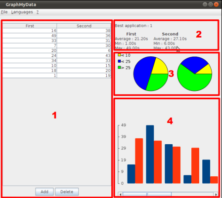

Voici le contenu de l'aide de GraphMyData :
GraphMyData est un outil pour montrer différentes statistiques entre différentes application lorsque l'on effectue une évaluation d'une interface utilisateur par deux personnes qui ne connaissent pas cette application. Les données entrées sur la gauche représente le temps (par ex. en secondes ou dans n'importe quelle autre unité) utilisé pour effectuer une action dans une application à tester. Cette application ne gère que une comparaison entre deux versions d'une interface utilisateur.
Il peut y avoir différent types de mesures qui peuvent être faites, par ex. le temps utilisé pour trouver de l'aide, pour savoir comment imprimer, etc.
L'application présente ensuite en temps réel différentes statistiques sur les résultats données
L'application est séparée en quatre différentes vues qui sont présentées ci-dessous. La première vue est la vue tableau, dans laquelle mettre les mesures effectuées. La vue 2 est la vue données, qui montrent quelques statistiques. La vue 3 montre un diagramme camembert correspondant aux données et la vue 4 montre un histogramme.

Les 4 vues de GraphMyData
Vous pouvez trouver plus d'informaitons sur ces vues dans la section ci-dessous.
Cette vue affiche les données courantes des deux applications. Vous pouvez ajouter une nouvelle donnée dans ce tableau en utilisant le bouton Ajouter ou en pressant sur la touche 'a' du clavier, lorsque le tableau est sélectionné. Ensuite, une vue s'affiche permettant d'ajouter de nouvelles données. Remplissez les champs de texte, et pressez ensuite le bouton OK
Vous pouvez aussi éditer les données dans le tableau en double-cliquant sur les données et en éditant directement la valeur.
Cette vue affiche des états concernant les données courantes. Elle affiche quelle est la meilleure application, ainsi que les valeurs moyenne, maximale et minimale des deux applications.
Les diagrammes camembert montrent la proportion de valeurs dans trois intervales différents : plus petites que 10 (jaune), entre 10 et 25 (bleu) et finalement plus grand que 25 (vert). Il y a un diagramme camembert pour chaque application.
La vue histogramme montre simplement les données comme elle sont mises dans le tableau, dans une forme visuelle. Les deux barres (bleue et rouge) représentent la valeur des mesures pour l'application 1, resp. l'application 2. Les groupes de barres sont mis dans le même ordre que celui de la vue tableau.